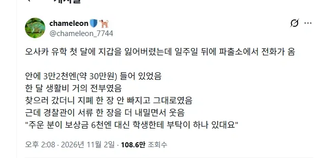
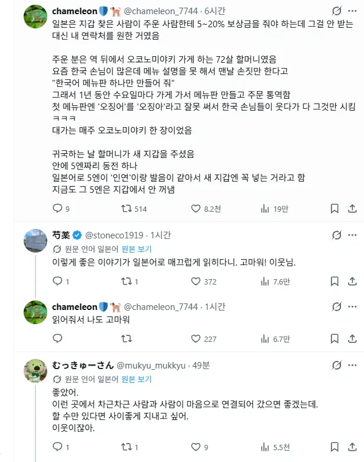

35 · 16 · 11 분 전 · 원문


수집 당시 댓글 16개
스칼리츠의헨리 · 3 시간 전
자연그대로의맛 · 2 시간 전
간만에 기분좋은 썰이군
비눗방울 · 2 시간 전
5엔이 그런 의미가있었네
↳ 답글 · 험피 · 23 분 전
"자, 이제 이 5엔을 일본어로 발음해봐라."
↳ 답글 · 타케이테아시 · 16 분 전
쥬고엔 고짓센
↳ 답글 · 야끼쏘박 · 14 분 전
죽어라 코리안
↳ 답글 · 코카콜라제로 · 7 분 전
ㅋㅋㅋㅋㅋ미친놈인가 ㅋㅋㅋㅋㅋㄱ
↳ 답글 · 비눗방울 · 6 분 전
그러고보니 ㅅㅂ 그것도 그거네
↳ 답글 · react · 8 분 전
신사 참배할때도 같은 이유로 5엔 던지곤 하더라
↳ 답글 · 비눗방울 · 5 분 전
난 뭣도 모르고 100엔 500엔 던졌네
↳ 답글 · 므겡므겡 · 방금 전
신사에선 500엔을 더 좋아함 ㅇ ㅇ
Haja10 · 14 분 전
어디서 글카 타는 냄새 나는데
↳ 답글 · qvsvlgpsvhc · 12 분 전
너 정말 전립선을 찔렀어
↳ 답글 · Yegor · 11 분 전
응기잇
없는닉네임입니다 · 13 분 전
보듬어주는사회 · 9 분 전
낭만있다 그죠
댓글
수집 당시 댓글 16개
스칼리츠의헨리 · 3 시간 전
자연그대로의맛 · 2 시간 전
간만에 기분좋은 썰이군
비눗방울 · 2 시간 전
5엔이 그런 의미가있었네
· 험피 · 23 분 전
"자, 이제 이 5엔을 일본어로 발음해봐라."
· 타케이테아시 · 16 분 전
쥬고엔 고짓센
· 야끼쏘박 · 14 분 전
죽어라 코리안
· 코카콜라제로 · 7 분 전
ㅋㅋㅋㅋㅋ미친놈인가 ㅋㅋㅋㅋㅋㄱ
· 비눗방울 · 6 분 전
그러고보니 ㅅㅂ 그것도 그거네
· react · 8 분 전
신사 참배할때도 같은 이유로 5엔 던지곤 하더라
· 비눗방울 · 5 분 전
난 뭣도 모르고 100엔 500엔 던졌네
· 므겡므겡 · 방금 전
신사에선 500엔을 더 좋아함 ㅇ ㅇ
Haja10 · 14 분 전
어디서 글카 타는 냄새 나는데
· qvsvlgpsvhc · 12 분 전
너 정말 전립선을 찔렀어
· Yegor · 11 분 전
응기잇
없는닉네임입니다 · 13 분 전
보듬어주는사회 · 9 분 전
낭만있다 그죠